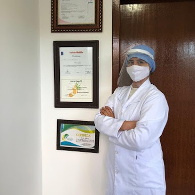

Cuidamos com profissionalismo dos seus pés.
Como estão os seus pés? Macios, lindos e saudáveis?
Agende a sua visita para receber os cuidados profissionais de podologia em Curitiba, com tratamentos especiais para cuidar de infecções, calos, unha encravada e soluções personalizadas.
Agendar Consulta via WhatsApp

Conheça a Especialista
Quem sou Eu?
A Podóloga Thais é especialista em podologia com mais de 10 anos de experiência no mercado.
Atuando em toda área da podologia visando a eficiência e um atendimento humanizado, nosso maior foco é proporcionar alívio imediato da dor, utilizando de técnicas eficazes, trazendo conforto e bem estar para seus pés.
Unha Encravada
Micoses e Frieiras
Podogeriatria
Podologia Preventiva
Calos e Rachaduras
"Nosso objetivo é tratar seus pés, trazendo mais saúde e qualidade de vida para você."
Especialidades Clínicas
Serviços que Realizamos
Cortes Técnicos
Corte correto e anatômico das unhas, prevenindo encravamentos e infecções futuras.
Calos e Calosidades
Remoção cuidadosa e tratamento especializado para alívio imediato de dores e desconfortos.
Unha Encravada
Tratamento eficaz para onicocriptose, aliviando a dor e o desconforto, promovendo a cicatrização adequada.
Fissuras
Cuidados intensivos para calcanhares rachados, visando alívio para seus pés.
Auxílio no Combate à Micose
Acompanhamento, limpeza e protocolos específicos para combater fungos nas unhas.
Hidratação e Prevenção
Hidratação profunda e medidas preventivas para manter a saúde e beleza constante dos pés.
Podologia Infantil
Abordagem lúdica e extremamente cuidadosa para tratamento de problemas nos pés dos pequenos.
Pés Diabéticos
Atenção redobrada, prevenção e tratamento rigoroso para evitar complicações graves.
Importância da Podologia
Além dos seus pés serem o membro mais importante do seu corpo, sem eles você não se locomove facilmente. A podologia é responsável pela prevenção de uma série de doenças, como feridas e machucados que, se não tratados, podem levar a sérias complicações. Vai muito além da estética, é questão de saúde!
Tire suas Dúvidas
Perguntas Frequentes
Entenda melhor sobre nossos serviços e a importância do cuidado profissional.
O pedicure é responsável apenas por manter a boa aparência de suas unhas por meio de limpeza superficial, lixamento das unhas e esmaltação; o corte correto da unha, tratamento de patologias e lixamento terapêutico dos pés é responsabilidade do seu podólogo.
Não, a Podologia serve tanto para tratar como para prevenir problemas nas unhas e pés, e qualquer pessoa pode usufruir desse serviço. Trabalhamos de forma independente para garantir a saúde dos seus pés desde o primeiro contato.
Estamos esperando você
Contato e Localização
Nosso Endereço
R. Alécio Masson, 131 - Alto Boqueirão
Curitiba - PR, 81770-060
Horários de Atendimento
Segunda a Sexta: 07h às 20h